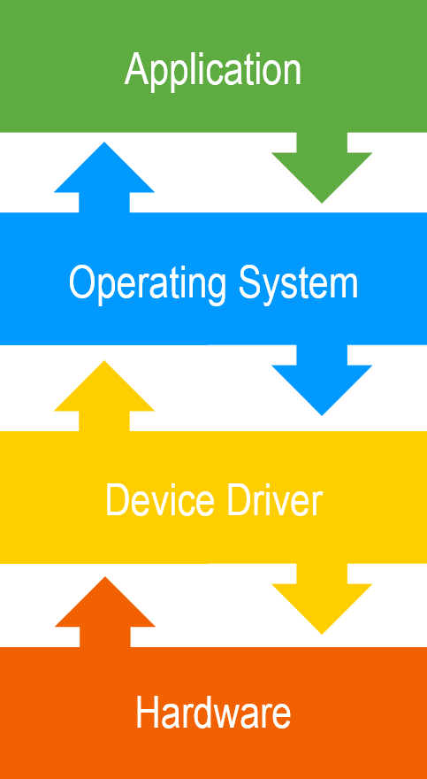
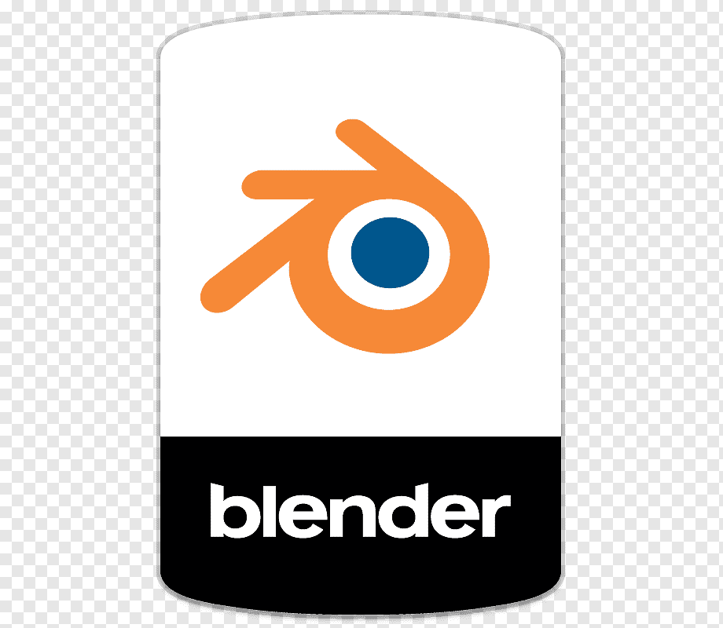
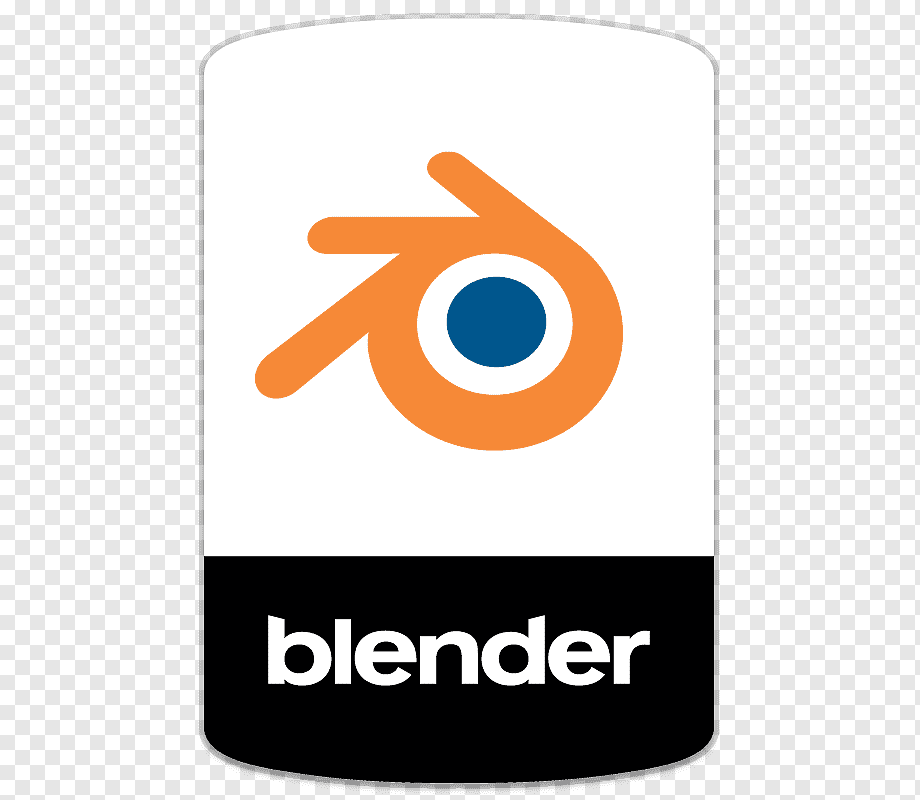

Коли ми говоримо про комп'ютери, ми зазвичай маємо на увазі персональний комп'ютер або ноутбук, хоча пояснення того, що насправді є комп'ютером, далеко за межами цього. Комп'ютер - це електронний пристрій, який обробляє інформацію або дані. Він може зберігати, отримувати і обробляти дані. Чи то крихітний мобільний телефон, чи великий настільний комп'ютер, вони обидва можуть бути названі комп'ютером.
Історія комп'ютера бере свій початок ще в 19 столітті, коли Чарльз Беббідж (1791-1871) почав нову технологічну еру, розробивши першу машину, яка могла автоматично виконувати складні обчислення. Пізніше був зроблений ряд нових винаходів. Існує 5 основних поколінь комп'ютерів, кожне з яких внесло значні поліпшення і привело нас до сьогоднішнього рівня технологічної ери.

Перше покоління: Вакуумні Трубки (1946-1959)
У 1946 році Дж.П. Екерт і Дж.В. Маулі успішнло винайшли перший електронний комп'ютер під назвою ENIAC (“Electronic Numeric Integrator And Calculator”) з наступним винайденням UNIVAC (1951), IBM-701 (1952) та інших комп'ютерів. Ці комп'ютери були надзвичайно великими порівняно з сучасними, могли важити до 30 тонн і споживали багато енергії. Через їх громіздкість такі комп'ютери були дуже дорогими, і звичайні люди не могли собі їх дозволити.

Друге покоління: Транзистори (1959-1965)
Комп'ютери другого покоління були використовували транзистори замість вакуумних трубок, тому вони були меншими і споживали менше енергії. Хоча вони потребували постійного обслуговування, оскільки вони були відносно великими порівняно з сучасними стандартами.

Третє покоління: Інтегральні Схеми (1965-1971)
Третє покоління комп'ютерів було засновано на інтегральних схемах. Інтегральна схема була винайдена Робертом Нойсом і Джеком Кілбі в 1959 році і вимагала складних технологій, адже така схема була цілісним компонентом, що містив багато транзисторів.

Четверте покоління: Мікропроцесор (1971-1980)
Мікропроцесор, який використовувався в комп'ютерах четвертого покоління, це невеликий інтегральний центральний процесор (CPU) комп'ютера, який виконаний на одному мікроелектронному кристалі. Він містить мільйони малих транзисторів, резисторів та інших компонентів, об'єднаних в одному чипі. Крім того, такі комп'ютери були оснащені технологією GUI (графічний інтерфейс), що використовується і сьогодні, і додає комфорту і зручності для користувачів.

П'яте покоління: Штучний Інтелект (1980-сьогодні)
Головна мета штучного інтелекту - створити пристрій, який міг би сприймати інформацію з вводу людською мовою, а також здатний до навчання і самоорганізації. Світ інформаційних технологій (IT) до сьогоднішнього дня намагається вирішити цю проблему. За час комп'ютерів п'ятого покоління були винайдені настільні комп'ютери, ноутбуки, смартфони та безліч інших нових зручних для користувача комп'ютерів. На сьогоднішній день технологічні компанії пропонують нам різні види комп'ютерів, починаючи від великих персональних комп'ютерів і закінчуючи крихітними розумними годинниками, які можуть здійснювати відеодзвінки з друзями на іншому кінці Землі.

Апаратне vs Програмне
забезпечення
У наш час, безумовно, комп'ютер є головним помічником людини, без якого життя було б набагато складніше. Однак, що таке сам комп'ютер? Як у нього є всі ці здібності зберігати, отримувати і обробляти наші дані? Щоб краще пояснити це, давайте почнемо з 2 основних термінів: апаратне забезпечення і програмне забезпечення. Це два основних компонента, від яких залежить комп'ютер. Для спрощення розуміння, апаратне забезпечення відноситься до фізичних елементів комп'ютера - те, з чого він фактично складається, а програмне забезпечення - до програм або додатків, які дають інструкції різним компонентам комп'ютера про те, як виконувати певне завдання.
Апаратне забезпечення
Центральний процесор (ЦП)

Центральний процесор відповідає за обробку всієї інформації, отриманої від програм, запущених на вашому комп'ютері. Швидкість, з якою процесор обробляє інформацію, вимірюється в гігагерцах (ГГц). Чим більше гігагерц у процесора, тим швидше він буде працювати.
Материнська плата
Материнська плата знаходиться в центрі того, що змушує комп'ютер працювати. Вона містить центральний процесор і є мозком комп'ютера, розподіляючи енергію туди, де вона потрібна, спілкуючись і координуючи роботу всіх інших компонентів. Все це робить материнську плату одним з найважливіших компонентів комп'ютера.
Жорсткий Диск

Жорсткий диск - це пристрій зберігання, який відповідає за всі дані комп'ютера. Наприклад, коли ви зберігаєте важливий документ або файл з кодом програми, ви зберігаєте їх на жорсткий диск вашого комп'ютера. Існує два різних типи дисків: жорсткий диск (HDD) і твердотільний накопичувач (SSD). Жорсткі диски працюють шляхом запису даних на обертові магнітні диски, тоді як твердотільні накопичувачі зберігають дані в чипах пам'яті.
Оперативна пам'ять

Оперативна пам'ять - це тимчасова пам'ять, яка встановлюється в слоти пам'яті материнської плати. Вона тимчасово зберігає інформацію, створену програмами, що робить дані миттєво доступними (комп'ютеру не потрібно витрачати час, щоб знайти цю інформацію на жорсткому диску). Однак, як тільки комп'ютер вимикається, все, що зберігається в оперативній пам'яті, видаляється (на відміну від постійного зберігання даних на жорсткому диску). Задачі, яким може знадобитися оперативна пам'ять, можуть бути редагування відео або фотографій, багатозадачність з декількома відкритими програмами, вкладками і т.д.
Блок Живлення

Блок живлення - це точка, де живлення входить в вашу систему з зовнішнього джерела живлення, а потім розподіляється материнською платою на окремі компоненти комп'ютера. Не всі блоки живлення створені однаково, і без правильного блоку живлення ваш комп'ютер не буде працювати. Комп'ютери, що використовуються для високоінтенсивних завдань, таких як графічний дизайн або ігри, споживають більше енергії, і тому їм потрібен більш потужний блок живлення, щоб задовольнити цю додаткову потребу.
Периферійні Пристрої
Периферійні пристрої - це пристрої, які підключаються до комп'ютера, щоб розширити його можливості (наприклад, сканер, принтер, миша і т.д.). Однак вони не обов'язково повинні бути присутніми, щоб комп'ютер виконував свою задачу (зберігати, отримувати і обробляти дані). Приклади периферійних пристроїв:
Миша

Комп'ютерна миша - це пристрій вводу, який використовує технологію "наведи і клацни", щоб взаємодіяти з комп'ютером. Сучасні миші зазвичай мають дві кнопки, ліву і праву, з колесиком прокрутки між ними.
Клавіатура

Клавіатура - це найбільш поширений пристрій вводу. Вона працює шляхом натискання кнопок (клавіш) і відправки сигналів на комп'ютер.
Монітор

Монітор дозволяє користувачам легше взаємодіяти з комп'ютером і є найпоширенішим пристроєм виводу. Монітор візуально відображає сигнали, відправлені комп'ютером. Вони виглядають дещо схожими на телевізори, але зазвичай мають більшу роздільну здатність дисплея, що дозволяє відображати більше деталей.
Колонки

Комп'ютерні колонки - це ще один поширений тип пристроїв виводу. Вони зазвичай поставляються парами, щоб забезпечити стереозвук.
Мікрофон


Мікрофон - це пристрій вводу аудіо. Він передає звуковий сигнал на комп'ютер, де його можна записати або передати через Інтернет. У наш час мікрофони можуть бути дуже маленькими і часто вбудовані в ноутбуки, веб-камери і мобільні телефони.
Вебкамера


Вебкамера - це пристрій вводу відео. Вони можуть бути зовнішніми, і підключаються до комп'ютера, або вбудованими в сам комп'ютер. Вебкамери найчастіше використовуються для того, щоб люди могли бачити один одного при спілкуванні через Інтернет.
Програмне забезпечення
Програмне забезпечення - це один з ключових факторів у роботі комп'ютера. Як вже згадувалося раніше, програмне забезпечення - це набір інструкцій, які кажуть комп'ютеру, як використовувати апаратне забезпечення. Важливо розуміти, що апаратне забезпечення без програмного забезпечення - це просто набір об'єктів, які не знають, як працювати разом, а програмне забезпечення створює команду з цих об'єктів. Існує безліч типів програмного забезпечення, у яких різне призначення. Починаючи з операційних систем і закінчуючи додатками планувальниками з вашим щоденним списком справ. Однак, в цілому, все програмне забезпечення поділяється на 2 категорії: системне і прикладне програмне забезпечення.

Системне програмне забезпечення
Системне програмне забезпечення допомогає користувачу і апаратному забезпеченню взаємодіяти один з одним. По суті, системне програмне забезпечення - це проміжний шар між користувачем і апаратним забезпеченням. Коли ви вмикаєте комп'ютер, саме системне програмне забезпечення першим активується і завантажується в пам'ять системи. Системне програмне забезпечення зазвичай працює в фоновому режимі і не взаємодіє з кінцевими користувачами безпосередньо. Приклади системного програмного забезпечення:
Прошивка
Прошивка - це незмінне програмне забезпечення, вбудоване в постійну пам'ять. Це набір інструкцій, який постійно зберігається на пристрої. Ці інструкції надають основну інформацію комп'ютеру про те, як взаємодіє апаратне забезпечення. Найвідоміший приклад прошивки - це BIOS.

Операційна Система (ОС)
Операційна Система - це програмне забезпечення, яке керує ресурсами апаратного забезпечення комп'ютера і надає основні сервіси для запуску програм. Кожному пристрою, будь то настільний комп'ютер, ноутбук або мобільний телефон, потрібна операційна система, щоб забезпечити базову функціональність. Існує безліч типів операційних систем. Деякі приклади операційних систем: Android, iOS, Linux, Mac OS, Unix, MS Windows.

Драйвера
Драйвер - це спеціальний тип програмного забезпечення, призначений для забезпечення взаємодії між операційною системою і конкретним компонентом апаратного забезпечення, таким як відеокарта, принтер, монітор і т.д. Драйвер забезпечує правильне функціонування компонента, дозволяючи операційній системі використовувати його можливості і забезпечувати стабільну роботу пристрою.
Транслятори
Ці програми-посередники перекладають код мови високого рівня в більш простий машинний код. Код мови високого рівня - це код, який програміст пише за допомогою звичайних мов програмування, таких як Python, Java, Ruby і інші. Однак машини не можуть розуміти його безпосередньо, тому що вони розмовляють лише на різних варіаціях машинного коду. Мови машинного рівня (мови низького рівня) - це мови, які не зрозумілі для переважної більшості людей і програмістів. Відповідно, потрібні транслятори мов програмування.

Код Мови Високого Рівня

Код Мови Низкого Рівня
Прикладне програмне забезпечення (Програми)
Це програмне забезпечення, яке допомогає користувачу виконувати певні завдання (записувати замітки, встановлювати будильник, ігри і т.д.). Прикладне програмне забезпечення знаходяться на вищому рівні, ніж системне програмне забезпечення і призначені для конкретних цілей. Відсутність таких програм не є критичною, і не впливає на роботу системи. Приклади програм:
Веб-Браузери
Ці програми використовуються для доступу в Інтернет. Вони допомагають користувачеві знаходити і отримувати дані з мережі. Деякі приклади веб-браузерів це Google Chrome, Mozilla Firefox, Safari, і т.д.

Текстові Процесори
Ці програми призначні для створення і редагування текстових документів. Вони допомагають зберігати, форматувати і друкувати документи. Деякі приклади текстових процесорів це Microsoft Word, Google Docs, і т.д.

Мультимедійні Програми
Це програмне забезпечення, яке здатне відтворювати, створювати або записувати аудіо або відео файли. Вони використовуються для відеомонтажу, анімацій, графіки. Деякі приклади мультимедійних програм це Media Monkey, VLC Media Player, Windows Media Player.


Графічні Програми
Графічні програми допомагають користувачу створювати і редагувати зображення, анімації, графіку і т.д. Деякі приклади графічних програм це Adobe Photoshop, Blender, PaintShop Pro.
 
